Asala · store demos
One jewellery store, many visual directions. Every demo works the same way: Arabic first with an English switch, prices in shekels, add to bag, cash-on-delivery checkout with delivery fee by city. Only the look changes, so you can compare styles fairly.
Asala’s favourite so far: the tatreez directionThe tatreez panel rebuilt in Asala’s own brand, with the real logo, colours and product photos. The tatreez group below shows more ways to take it. Open it- Asala makes its jewellery in Nablus; the founder is an architect from Nablus
- Asala’s favourite direction so far: tatreez
- Prices and delivery fees are placeholders
- Payment gateway not chosen yet
- Built custom, not on Shopify
Tatreez, Asala’s favourite, and famous stores with tatreez touches
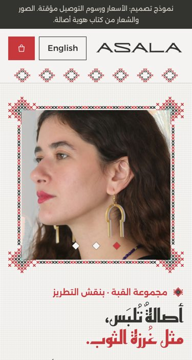
Tatreez Linen Asala’s favourite the client’s favourite (demo 07), in Asala’s brand
The linen tatreez panel from demo 07, rebuilt with the real logo, colours and photos. The hero sits in a cross-stitched frame that stitches itself in, pieces sit in dashed stitch panels, the Dome earring can be seen in its Palestinian tatreez pattern, and the footer is a stitched border.
- Suits
- Keeping exactly what the client liked, now with Asala’s own pieces.
- Risk
- Quiet and craft-like; less “fashion” than the international layouts.
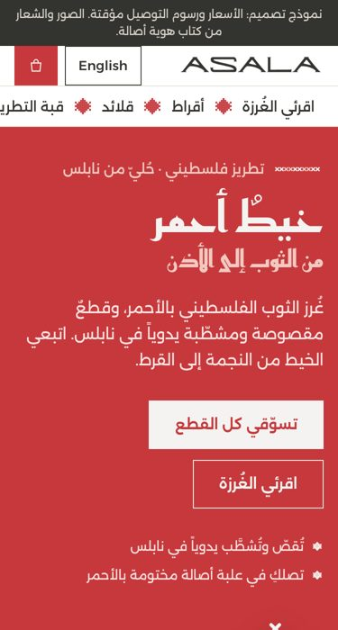
Tatreez Red · bold a second tatreez direction
A bold red campaign hero with light cross-stitch, then four tatreez motifs (star, cypress, chain, old man’s teeth) that each open their own edit of pieces. A gift-box section recolours its stitching in the chosen seal colour.
- Suits
- A modern, confident brand that still says “Palestinian” at first sight.
- Risk
- Very red; needs strong photos to stand up to it.
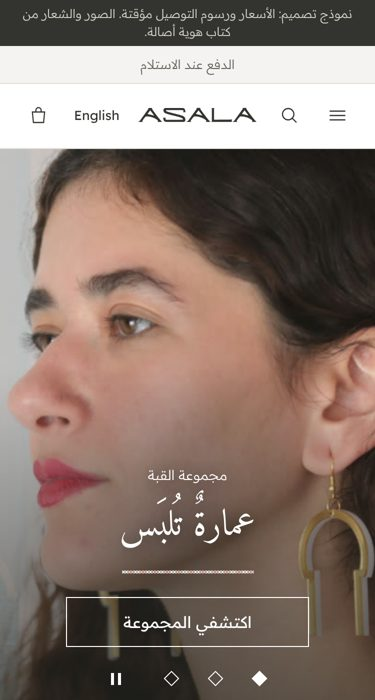
Heritage House inspired by Azza Fahmy
A heritage luxury house: centred logo, mega menu, full-width campaign slider, the two collections as large tiles, a dark “craft” section from sketch to box, and the four Dome patterns as medallions. Tatreez appears as fine gold and linen threads.
- Suits
- Positioning Asala as a premium heritage jewellery house.
- Risk
- Elegant but slower to shop; relies on campaign photography.
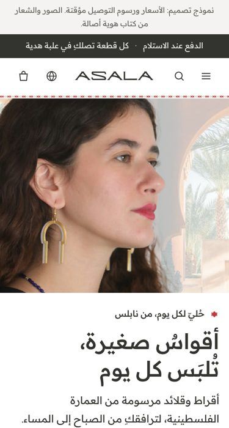
Everyday inspired by Mejuri
Clean, white and modern: shop by category, an everyday edit with photo swap and metal dots, a gift guide by budget, and a “build your ear stack” tool that adds up to three pairs at once. Tatreez stays quiet in icons, badges and hairlines.
- Suits
- Young everyday buyers and gifting; the easiest to shop on a phone.
- Risk
- The most “international”; the heritage is in the details only.
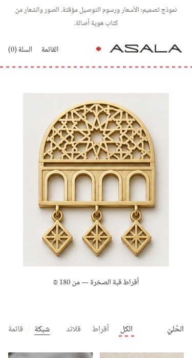
Gallery inspired by Sophie Buhai
A gallery: white space, small serif type and the pieces shown like objects. A grid or a typographic list, the Dome in four patterns, packaging sizes, and one single red stitch as the only ornament.
- Suits
- An art-led, high-end image with very little noise.
- Risk
- Minimal to the edge; some buyers may find it too quiet.
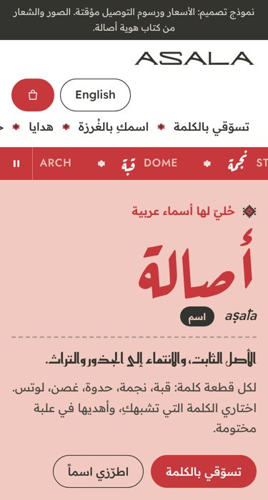
Words inspired by Bil Arabi
Playful and typographic, in pink and red: shop by the Arabic word of each piece (قبة، نجمة، حدوة، غصن، لوتس) and type a name to see it stitched live in tatreez on the gift card (personalised card to confirm).
- Suits
- Gifting and social media; the name-in-stitch is a strong “wow” moment.
- Risk
- The personalised card is a new service the shop must agree to offer.
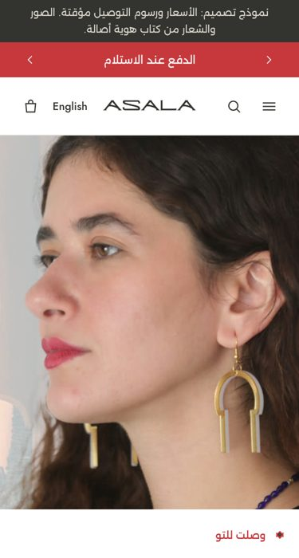
The Edit inspired by Missoma, with heritage touches
The Missoma layout you liked: rotating announcement bar, campaign hero, “shop the edit” tiles, a product rail with gold/silver dots, shop-the-look hotspots and a photo wall. Tatreez sits in the menu separators, section dividers, buttons and badges.
- Suits
- A fashion-led demi-fine brand that sells through edits and looks.
- Risk
- Needs regular new edits and photos to keep it alive.
Best of the top-rated jewellery stores
One store that combines what the best-rated jewellery shops do well (Pandora and Mejuri are in the top 1% of Baymard’s 2025 jewellery benchmark).
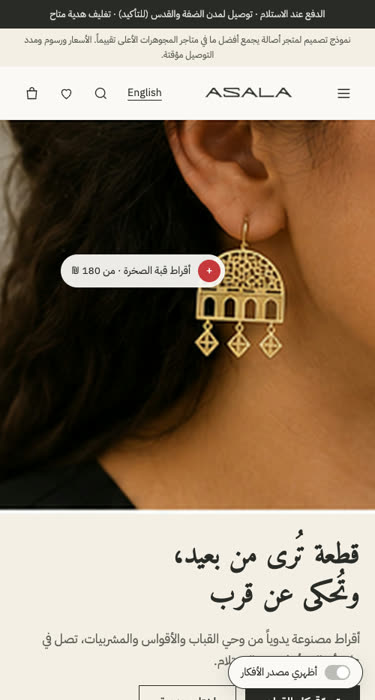
Signature Store best practices from Pandora, Mejuri and Tiffany
A gift finder (who, occasion, budget), predictive search with photos, metal and category filters, quick view, a wishlist and recently viewed pieces. The product page shows on-model photos with zoom, the size in mm with an approximate true-size view, delivery fee and time by city, gift wrap with a card message, “looks lovely with” and an honest empty reviews area, plus a sticky add bar on phones. An “ideas” switch labels every feature with the shop it comes from.
- Suits
- The most complete, conversion-focused store; a strong base for the real build.
- Risk
- Many features to maintain; delivery times and the exchange policy must be set by the shop first.
The team’s Figma directions, built as working stores
Each of the six directions in the “Asala — Website Directions” Figma file, rebuilt faithfully as a working store: bag, cash-on-delivery checkout, Arabic and English, and a phone layout. Wording stays to what Asala can stand behind.
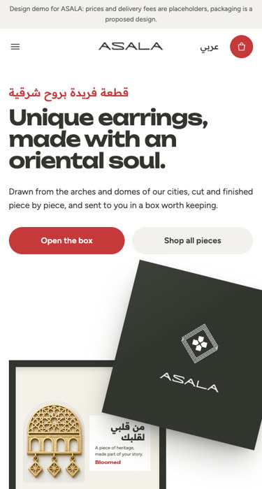
B · Open the box Figma direction B
A gift box that opens in the hero, a scrolling band of the diamond lattice, a colourful sketchbook bento where you can vote for the next piece, “find yours by the seal” categories and a gift-box builder.
- Suits
- A playful, gift-led brand with a strong bilingual voice.
- Risk
- Bold colours and big type; needs the drawings and packaging to really exist.
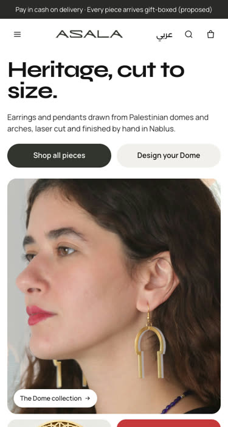
C · Modern gallery Figma direction C
A giant “Heritage, cut to size.” headline, a photo mosaic, a black scrolling band, filterable pieces with Arabic names, “one dome, four lattices” with a working pattern and metal picker, and the packaging table with a gift builder.
- Suits
- A modern, gallery-like store that lets the photos and the Dome do the talking.
- Risk
- Very minimal; relies on great product photography.
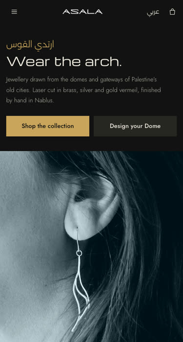
D · Modern night Figma direction D
Black and gold with a wide display type: a split hero with the cover photo, a spotlight carousel through every piece in an arch card, collection tiles, the four steps from sketch to ear and the pouch with a gift builder.
- Suits
- An evening, premium mood that suits gifting and the Dome.
- Risk
- Dark stores can feel heavy on phones in daylight; one carousel for browsing.
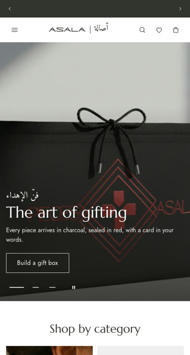
E · Heritage house Figma direction E (international)
A classic international jewellery house: rotating announcements, a two-row header with the ASALA | أصالة lockup, a gifting hero carousel, categories, a signature carousel, the edit tiles, craft and campaign, atelier services, an opening gift box with a builder, #WearAsala and a trust row. Wishlist included.
- Suits
- Looking established and international from day one.
- Risk
- The most content to produce and keep up to date.
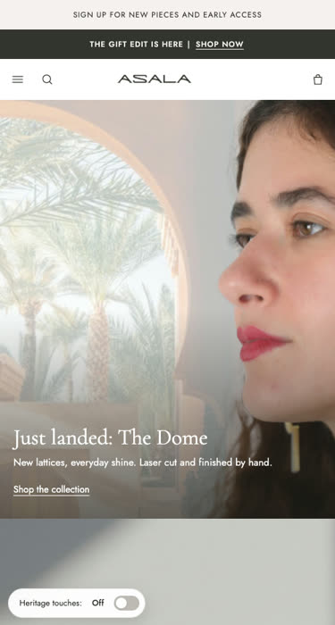
F · Missoma style Figma direction F
Missoma-like: utility bar, search in the header, two hero tiles, serif tabs over a product rail, edit tiles, a trust row, an inspiration wall and the sketchbook story, with a gift builder and extra Shop, Gifts, Atelier and Help views.
- Suits
- A familiar, fashion-jewellery feel that buyers already know how to use.
- Risk
- Close to a well-known brand’s look; less distinctive on its own.
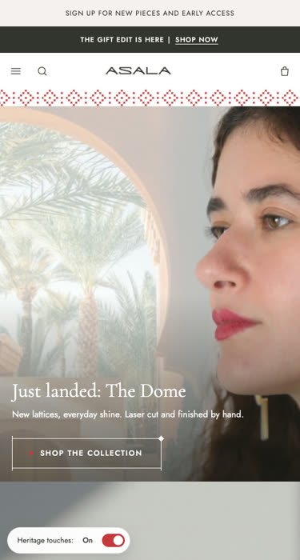
F2 · Heritage touches Figma direction F2
The same store as F with the heritage ornaments switched on: red diamonds between menu items, tatreez cross-stitch bands, diamond-mark dividers, stitched buttons and badges. A floating switch turns them on and off.
- Suits
- Keeping the easy Missoma layout while making it clearly Palestinian.
- Risk
- The ornaments must stay light, or they crowd the products.
Interactive 3D
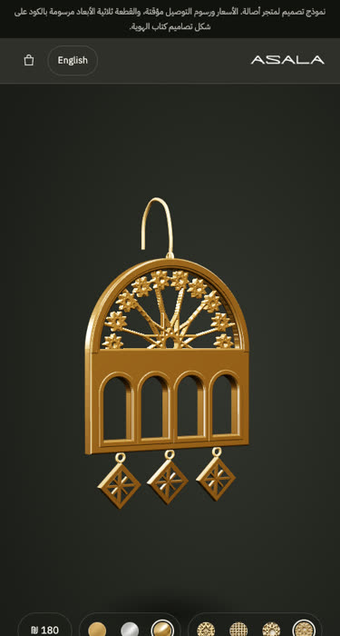
3D Studio turn it, take it apart, design your own
The Dome earring as a real 3D object: drag to turn it, switch its pattern and metal, and take it apart to see the pattern, frame, drops and hook. Below it, a studio where the buyer designs a whole earring (shape, arches, pattern weight and density, drops, metal, size, letters on the band, single or pair) and watches it built live, with a price and a link they can share.
- Suits
- Made-to-order and personalised pieces, and a launch that people talk about.
- Risk
- The custom shapes are generated, so the shop must confirm it can make every combination; heavier on older phones, with a photo fallback.
Famous store layouts, in Asala’s own brand
The layouts of well-known online shops, rebuilt with Asala’s real logo, colours, product photos and packaging.
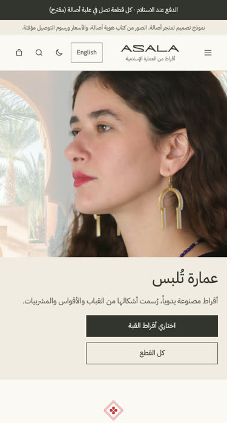
Dawn Store, brand edition Shortlisted the Shopify Dawn layout from the first shortlist
The same clean Shopify-style layout, now with the ASALA wordmark, charcoal, ivory and red, and only Asala’s own photos. The Dome earring has a featured block where you choose one of its 4 filigree patterns and 3 materials, and the photo and price change. Light and dark mode.
- Suits
- The safest, most familiar way to launch: buyers already know how to use it.
- Risk
- Plain by design; it relies on the photos and the Dome piece to feel special.
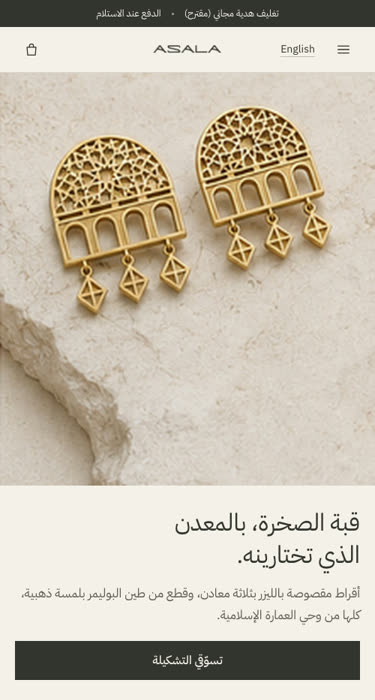
Metal Edit inspired by Monica Vinader
A calm, premium store where the metal comes first: pick brass with gold, 925 silver or gold vermeil and the whole page follows. Mega-menus, filters with removable chips, and a full product page with metal and pattern choice, a free gift-packaging switch and “complete the look”.
- Suits
- Making Asala feel like a premium fine-jewellery brand and selling the silver and vermeil versions.
- Risk
- Only the Dome has three metals today, so the metal story is thin until more pieces do.
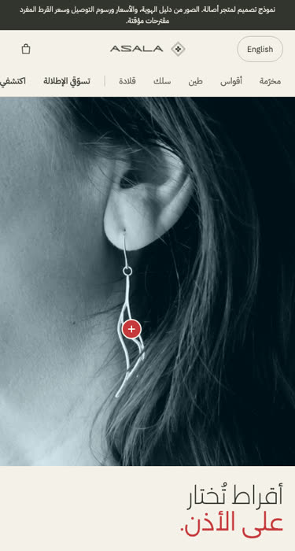
Ear Edit inspired by Astrid & Miyu
An earring-first store. Ear photos have tappable dots that show the piece being worn, a 3-question style finder suggests earrings with a reason for each, and every earring can be bought as a single or a pair (the single price is a proposal).
- Suits
- Asala’s real strength, statement earrings, and young buyers coming from Instagram.
- Risk
- Needs more photos of pieces being worn; the single-earring price must be agreed with the shop.
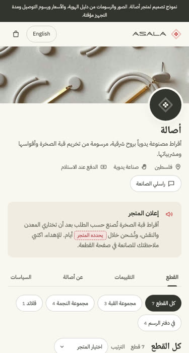
Maker Shop inspired by Etsy
Laid out like an Etsy shop, but as Asala’s own store: banner and round shop icon, a shop announcement, sections in a sidebar, and a full listing page with options, a note for the maker, delivery by city, “meet the maker” and honest empty reviews.
- Suits
- Showing that every piece is handmade and made to order by a real person, which builds trust fast.
- Risk
- Looks more like a small workshop than a brand; less room for big visual storytelling.
Original concepts from the brand book
Three looks built from ideas inside the brand book itself: the founder’s drawings, the packaging and the arches.
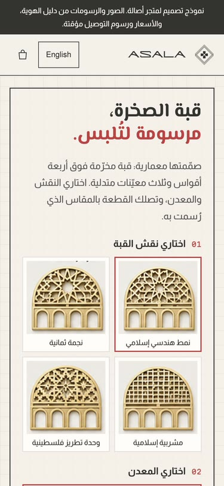
The Atelier the architect's drawing sheet
The founder is an architect, so the store is her drawing sheet: the Dome earring drawn with its real dimensions, a detail callout for the chosen filigree pattern, the three real material options, a sketch-to-piece strip, and every product on a sheet with a title block.
- Suits
- Making the design thinking the selling point, and the made-to-order Dome piece.
- Risk
- Technical look; less warm for quick impulse buys.
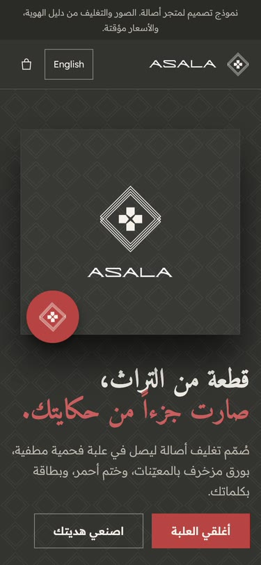
The Gift the packaging, as a store
Matte charcoal with the diamond tissue pattern. The box opens to reveal the piece, and a four-step gift builder picks the piece, a real box size, a seal colour and a card message with a live preview of the thank-you card.
- Suits
- Gifting: weddings, graduations, thank-yous, the occasions in Asala's own plan.
- Risk
- Dark only; depends on the packaging actually being produced.
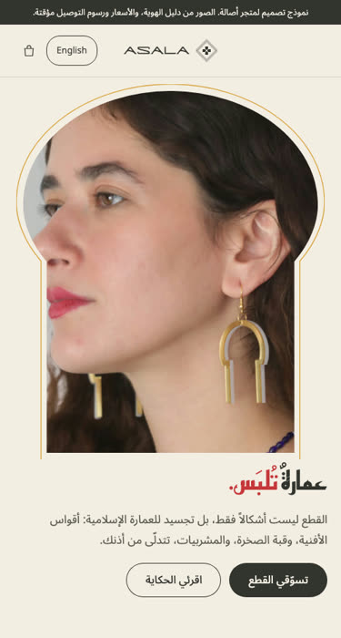
The Courtyard architecture you wear
Every image sits inside one of the brand's own arch shapes. The hero arch window widens as you scroll, collections are doorways, and a teal band (the colour of the founder's sketches) tells the history of earrings from the brand book.
- Suits
- Telling the heritage story and building a recognisable look on Instagram.
- Risk
- The arch frames crop photos; needs pieces shot with room above them.
Still to decide with Asala
- Which store direction to build
- Which local payment gateway or wallet to connect
- Delivery zones, fees and the exchange policy
- Final prices and product photos for every piece
How these were made
- Design rules from two Claude skills: Impeccable (design direction and quality checks) and UI/UX Pro Max (e-commerce and accessibility rules)
- Every demo uses Asala’s own logo, colours, photos and pieces from the brand book and the company archive